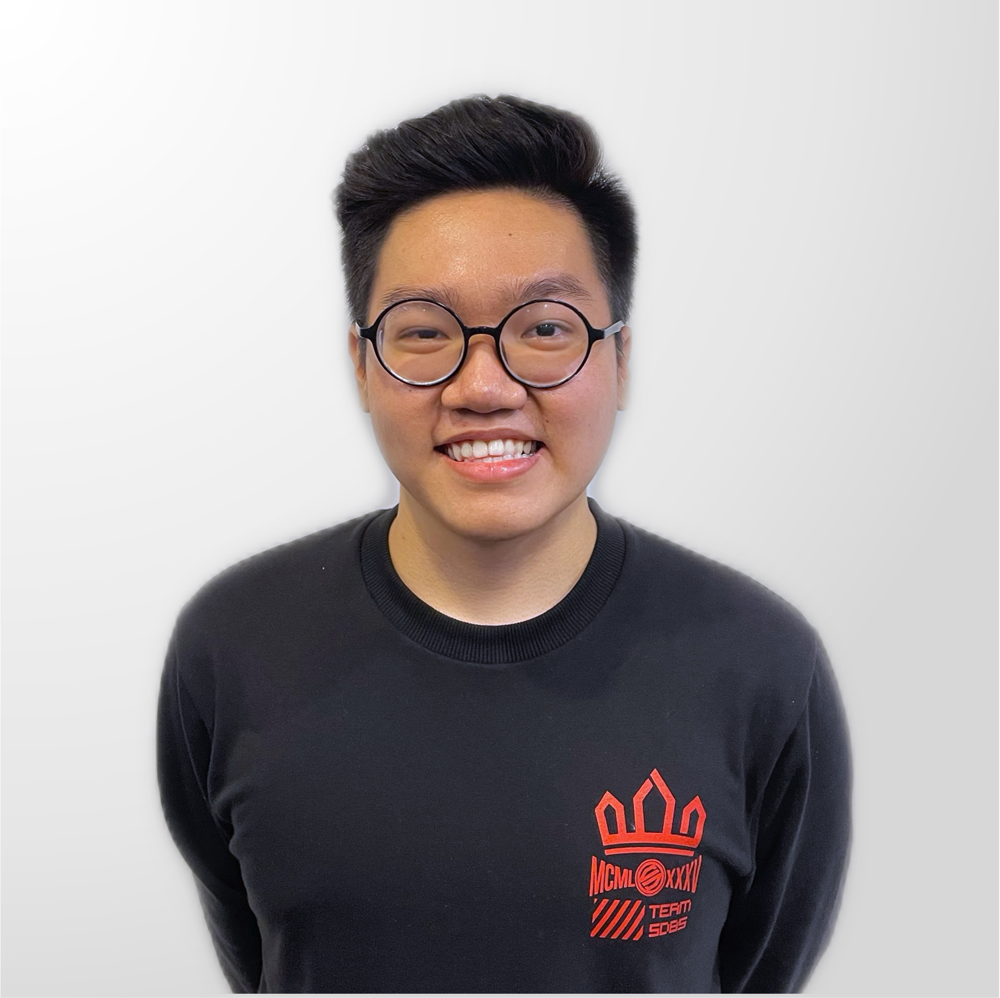

Doan Khanh Luan

- Personal Information:
- Name: Doan Khanh Luan
- Student ID: s3926375
- Birthdate: 17/1/2003
- Introduction:
- Future Plan:
My name is Doan Khanh Luan, a member of team 925. Even though my ancestors are originated from China and my grandparents were born and raised in Dong Thap and Long Hai, I am 100% a Saigoneer as I have lived in Ho Chi Minh city from the young age. My friends always describe me as a funny and down-to-earth person, but I think it just because gravity pulled me down. I must say that I have a lot of skills in different field from sports to academic, however, due to the fact that I learned too much, I was never an expert in any aspects. Currently, I am practicing piano to add to my collection of “skills-that-no-one-admired” and also to fulfill my dream of playing my own favorite music instead of listening to it on the internet.
Academically, I would considered myself as a decent students because event though I got a high mark in the national high school exam, I was performing terribly in the past. When I was in grade 7, I got a chance to attend a summer camp in Singapore, which is a great experience of mine as I was able to acquired useful skills like English speaking or presentation skills. In 2020, I was selected to be in the robotic team, representing the Cong Hoa campus in the SIU Open technology competition. After two days of hard-working, our team won the third place in the competition.
Whenever I have nothing to work on, to kill my boredom, I usually does some grooming for my three lovely dogs or just destroy my legs with some intense basketball game. I have three dogs which were all white, one of them is the first ever dog that I owned as pet and it was a little bit grumpy towards the other two, my favorite one is the poodle because it is the only one that allow me to pick up. Another hobby of mine is video games, I have been playing mobile video games for most of my life, which is a waste of time as everyone knows that gaming on a computer is much better. In the future I want to be a AI Project Manager, even more great if it is in the FPT company